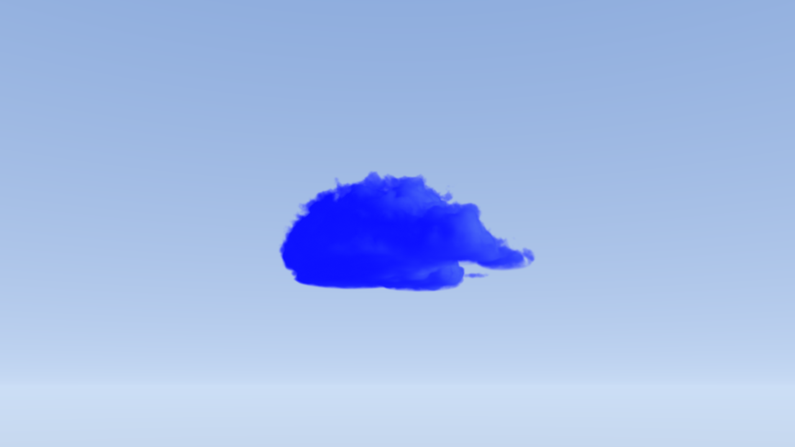
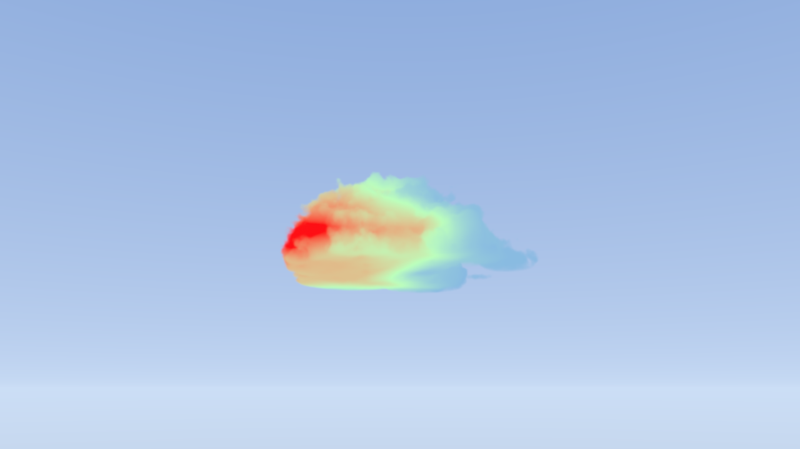
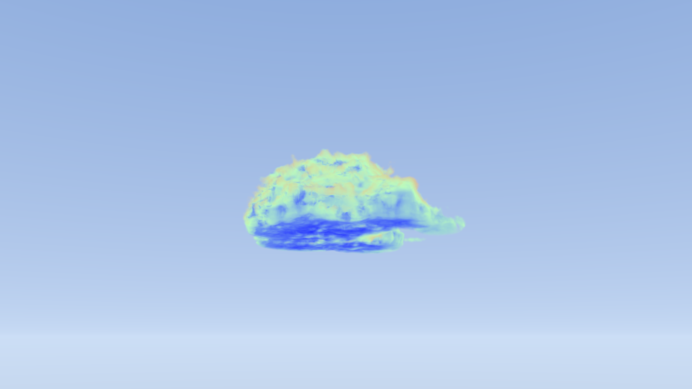
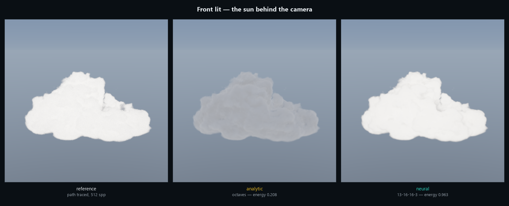
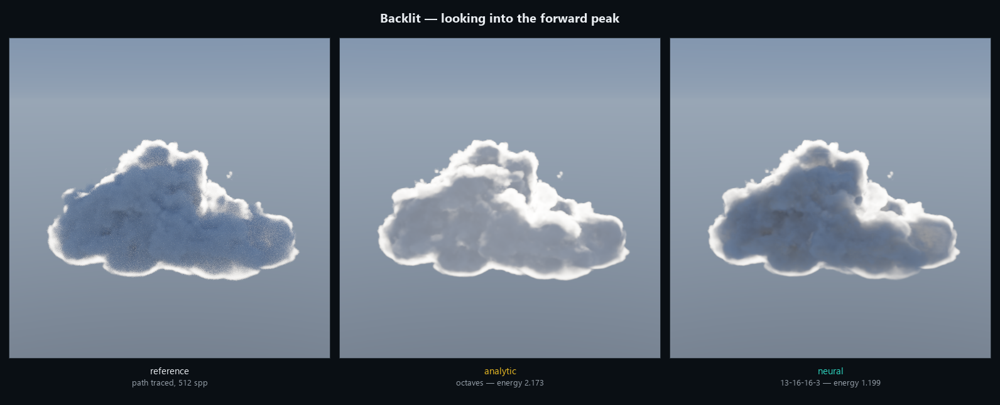

For as long as computer graphics has existed, making something look real has meant someone working out the maths for it. How light falls on skin, how metal catches a highlight, how water bends whatever is behind it. Somebody derives the equation, writes it down, and the graphics card runs it a few million times a second.
Some things are too complicated to write down. Clouds are the classic case. Light that goes into a cloud bounces between droplets thousands of times before any of it comes back out, and there is no neat equation for where it ends up. Games have always faked it.
Neural shaders are a different approach. Instead of working out the equation, you show a small neural network a few hundred thousand examples of the right answer and let it figure out how to produce them on its own. It is the same idea behind the AI everyone has been talking about, shrunk down small enough to run inside a video game sixty times a second.
That changes what is affordable. Effects that used to need minutes per frame can run live, and the things nobody could write an equation for stop being faked.
This article builds one end to end, on a cloud, and then checks it against the slow correct answer to find out how close it really gets.
What is a neural shader?
A shader is the small program that decides what colour each pixel ends up. Somewhere inside it there is a calculation: given these inputs, produce this colour. A neural shader replaces one of those calculations with a network that was trained rather than written.
Training means showing it examples. You generate a few hundred thousand cases where you already know the right answer, and the network gradually adjusts itself until it produces those answers too. Once that is done it has learned a shortcut to a result that would otherwise take far too long to compute.
The comparison people usually reach for is written directions against local knowledge. Directions are precise and someone had to work them out. Local knowledge came from walking the route a thousand times and cannot really be explained, but it gets you there faster.
Why clouds?
Because a cloud is the clearest case of a problem where the honest answer is known and unaffordable.
The honest answer is called path tracing. You simulate millions of individual light paths, bouncing each one around inside the cloud until it escapes, and average what comes out. It produces genuinely correct images and it takes minutes per frame.
So real-time renderers approximate instead, with a handful of curves that get tuned until the picture looks right. Those approximations are good. They ship in everything, and a cloud drawn that way is one you would happily put in a game. What they are not is accurate, and how far off they land changes depending on where the sun is, which is the part that turns out to matter.
Clouds are also a good test case for a less obvious reason. Everything else about drawing one is simple. Stepping along a ray and adding up what you find is easy code, which means the network can replace one specific piece and leave the rest untouched. That is what makes it possible to prove it helped.
The shape of the cloud is simple too, and worth a look because it is stranger than most people expect. There is no mesh and no sculpting. A cloud here is a few spheres welded together, leaned over sideways, flattened underneath, with fractal noise eaten out of the surface. That is the whole thing.
What a cloud actually is, in code
Every shape in the article comes out of this one function. It answers a single question: for a point in space, are you inside the cloud, and by how much. Positive means inside.
float Sample(float3 p) { // Wind shear. The cloud leans downwind as it rises, so the shape at // height y is the shape at the base, shifted sideways. p.xz -= shear * p.y; // Anvil. Widening the top is the same thing as narrowing the point you // are asking about, so it is a warp rather than extra geometry. float t = SmoothStep(anvilHeight, height, p.y); p.xz /= 1.0 + anvilSpread / radius * t; // The body: a handful of spheres, smoothly welded into each other. float d = lobes[0].w - length(p - lobes[0].xyz); for (int i = 1; i < lobeCount; i++) d = SmoothMax(d, lobes[i].w - length(p - lobes[i].xyz), lobeBlend); // Flat bottom. Intersect with the half space above the base, which is // the razor edge a real cumulus has. d = SmoothMin(d, p.y, baseSoftness); // Erosion. Fractal noise eats into the surface, faded in above the // base so the flat bottom survives it. float fade = SmoothStep(0.0, baseFadeHeight, p.y); float n = Fbm(p / erosionFeatureSize, erosionOctaves, seed); d += n * erosionAmplitude * fade; return d; // positive inside the cloud, negative outside }
Around forty lines, including the comments, and it produces every cloud in this article. Changing a couple of the numbers turns a cumulus into a storm.
The reason it is written as a function rather than stored as data is that a function can be sampled at any resolution. The renderer bakes it into a voxel grid before drawing, and the path tracer can sample the same function directly, so both are looking at the same cloud rather than at two versions of one.
What exactly gets replaced?
Drawing a cloud means walking a ray forward in small steps and asking two questions at every step. How much light is blocked here, and how much light is scattered toward the camera from here.
The first question is easy, because it only depends on how dense the cloud is at that point. The second is the hard one. Answering it properly means accounting for every route light could have taken to arrive there, including all the bouncing.
The network answers the second question and nothing else. Same ray walking, same blocking, same way of combining it all together. One switch in the shader changes the lighting model and the rest of the code carries on unaware.
The whole ray march, in about thirty lines
This is the loop that draws the cloud. It walks forward, skips empty space, and at each step asks how dense it is and how much light is coming toward the camera. The marked line is the only thing the network changes.
half4 RaymarchCloud(Ray ray, Volume v, Surface s)
{
float tNear, tFar;
if (!IntersectBox(v, ray, tNear, tFar)) return 0;
// Step size comes from the volume's own resolution, not from how far
// apart the box walls happen to be. The box is about 97% empty air.
float stepSize = v.voxelSize * s.stepScale;
// Offset each pixel's start by up to one step. Without this every pixel
// samples at the same depths and the error lines up into visible bands.
float t = tNear + stepSize * Dither(pixel);
half3 scattered = 0;
half transmittance = 1;
for (int i = 0; i < s.steps; i++)
{
// Stop once the cloud has blocked essentially all the light.
if (t >= tFar || transmittance < 0.01) break;
float3 p = ray.origin + ray.dir * t;
// A coarse mip reading zero proves this whole region is empty,
// so the ray can jump rather than crawl.
if (SampleCoarse(v, p) <= 0) { t += skipStep; continue; }
float density = SampleDensity(v, p);
if (density > 1e-5)
{
// **** THE ONE LINE THE NETWORK REPLACES ****
half3 inScatter = ShadeSample(v, s, p, ray.dir, toSun);
// How much light this step blocks.
half stepT = exp(-density * stepSize);
// Add what scattered toward us, dimmed by everything in front.
scattered += transmittance * inScatter * (1 - stepT);
transmittance *= stepT;
}
t += stepSize;
}
return half4(scattered, 1 - transmittance);
}Everything in that loop except the marked line is identical between the two versions being compared. Same stepping, same skipping, same dithering, same accumulation. That is what makes the comparison later in the article mean anything.
That second question has an answer at every point inside the cloud, and the shader can draw it directly instead of using it. This is the quantity being replaced:

What does the network look at?
This is the decision that matters most, because the network can only be as good as what it is allowed to see, and every input it reads costs performance at runtime.
What works for clouds is how much cloud is nearby, measured at several sizes at once. Picture standing in fog and asking how thick it is within arm's reach, then within a room, then within a street, then across a whole neighbourhood. Do that where you are standing, do it again in the direction of the sun, add the angle between your view and the sun, and that is everything the network gets.
Here is one of those inputs drawn onto the cloud. This is what it reads, not what it produces:

There is nothing in that list about the cloud's shape, how many lumps it has, or what kind of cloud it is. Just density at different sizes, and one angle. Describing the neighbourhood rather than the object is what keeps the input list short, and short inputs are what make it cheap enough to run per step.
The exact inputs, and why the sizes are in metres
Thirteen numbers per step. Six are the average density around the sample point at growing radii, six are the same thing measured toward the sun, and the last is the cosine of the angle between the view direction and the sun.
[0:6) mean density at the point, coarsening [6:12) mean density toward the sun, coarsening <- dominant predictor [12] cos(view, sun) radii are fixed in METRES: 6 / 12 / 24 / 48 / 96 / 192
Fixing those radii in metres rather than in texels is the decision that made this generalise. A description in texels means something different for every bake resolution and every cloud size, so a network trained on one would be wrong on the next. A description in metres means the same thing everywhere, and the mip level is just a cheap way to sample it.
The averages come from a mip pyramid of the density volume, so a coarse radius costs exactly what a fine one does: a single texture fetch.
The network also predicts how much light arrives from the sky above and how much bounces up off the ground below. Those come almost free, because they share the same internal machinery as the main answer.

How do you build one?
Four steps, and none of them are exotic.
1. Build the slow correct version first
Write the path tracer. It fires rays, bounces them thousands of times, and averages the result. It is slow and it does not need to be fast, because it never ships. It exists to generate truth, and later to be the thing you get scored against.
Skipping this step is tempting and it removes the only way to tell whether the network helped. "It looks better" is not a result.
2. Decide what the network sees
Covered above. Few inputs, each one cheap to fetch, and nothing that ties the network to one particular asset.
3. Train it
Run the path tracer over a lot of points, save the answers, and fit the network to them. This is ordinary machine learning, in Python, offline, once. What comes out is a few hundred numbers that ship with the game like any other asset.
What "a few hundred numbers" means in practice
Thirteen inputs, two hidden layers of sixteen units each, three outputs. That works out at 512 multiply-accumulate operations per evaluation, and the weights fit comfortably into shader constants.
Where the training samples come from matters more than how many there are. The first version spread them evenly through the cloud, but most of a cloud is deep interior that no camera ever sees, so most of the effort went into learning a part of the answer that never appears on screen. Choosing points the way a camera does, by sending a ray in and training where it first collides, moved accuracy on the bright visible regions from 0.34 to 0.70 with no change to the network at all.
4. Run it in the shader
Load the weights into shader constants and write the multiply-adds out by hand. There is no framework and no dependency involved. A network this small is a couple of loops.
The actual inference code, in HLSL
This is the entire network. Two unrolled loops, an activation function and a clamp, running at every step along every ray.
// Squared ReLU: x*x for positive x, zero below. One extra multiply over // plain ReLU, and the reason for it is visual rather than mathematical. float Act(float x) { float r = max(x, 0.0); return r * r; } float3 CloudNetEvaluate(float descriptor[13]) { // Standardise against the mean and scale stored alongside the weights. float x[13]; [unroll] for (int i = 0; i < 13; i++) x[i] = (descriptor[i] - _NetMean[i]) * _NetScale[i]; float h0[16], h1[16]; [unroll] for (int j = 0; j < 16; j++) { float sum = _NetBias0[j]; [unroll] for (int i = 0; i < 13; i++) sum += x[i] * _NetW0[j][i]; h0[j] = Act(sum); } [unroll] for (int j = 0; j < 16; j++) { float sum = _NetBias1[j]; [unroll] for (int i = 0; i < 16; i++) sum += h0[i] * _NetW1[j][i]; h1[j] = Act(sum); } // Squaring the output keeps the result non-negative by construction. // A clamp would not: it has zero gradient below zero, so any output that // wanders negative during training is dead for the rest of the run. float3 y; [unroll] for (int k = 0; k < 3; k++) { float sum = _NetBias2[k]; [unroll] for (int i = 0; i < 16; i++) sum += h1[i] * _NetW2[k][i]; y[k] = sum * sum; } return min(y, _NetClamp); }
The three outputs are sun light, sky light and bounced ground light. They share both hidden layers, so the second and third cost sixteen multiply-adds each and no extra texture reads.
Does it work?
The usual way to judge a cloud renderer is to look at a screenshot, and that turns out to be close to useless. An approximation is not uniformly wrong. It is a set of curves that were tuned in one situation, and it behaves differently in others.
So instead of one screenshot, swing the sun all the way around the cloud and score both renderers against the path traced answer at every position. A score of 1.000 means the render matches the truth. Below 1 is too dark, above 1 is too bright.
sun angle the usual way neural
--------- ------------- ------
0 deg 0.208 0.963
15 deg 0.227 0.958
30 deg 0.309 0.960
45 deg 0.410 0.952
60 deg 0.509 0.943
75 deg 0.602 0.956
90 deg 0.674 0.957
105 deg 0.738 0.932
120 deg 0.794 0.904
135 deg 0.893 0.939
150 deg 1.080 0.937
165 deg 1.433 1.010
180 deg 2.173 1.199
1.000 means the render matches the slow correct answer exactly.
0 deg is the sun behind you. 180 deg is the sun behind the cloud.The usual approach swings from 0.21 to 2.17, a factor of ten across the sweep. With the sun behind the camera it draws the cloud with about a fifth of the light it should have, and looking into the sun it renders it more than twice as bright as it is. The network holds between 0.93 and 0.96 from front lit all the way round to side on and past it, which is within about five percent of correct across eleven of the thirteen positions. The last two are the hard ones, and they are worth looking at rather than averaging away.
Here is the worst case, with the sun behind the camera:

The middle image is worth sitting with, because there is nothing obviously wrong with it. Without the left one for comparison it would pass without comment. It is simply grey where it should be white, and tuning cannot fix that everywhere at once, because the error moves as the sun does.
At 165 and 180 degrees the camera is looking almost straight into the sun through the cloud, and the network overshoots: 1.01, then 1.20. That is the one case it was always going to find hardest, for a reason worth knowing. Nearly all the light arriving there has carried straight on through a single bounce, which puts a very bright narrow spike into the answer, and a network trained to be right about everything spreads its effort rather than nailing a spike. The approximation has an exact formula for that spike, which is why it lands closest there too, and then sails past it to 2.17.

Why the error swings, physically
With the sun behind you, light has to turn roughly 180 degrees to come back to your eye. Cloud droplets scatter light strongly forward and weakly backward, so hardly any of it manages that in a single bounce. Everything visible on a front-lit cloud has bounced many times, and many-bounce light is what the cheap approximations model worst.
With the sun behind the cloud, light only has to carry straight on, which is exactly what droplets do best. The approximation has a real formula for that case, lands much closer, and in fact overshoots.
This is why one screenshot cannot tell you whether a scattering model is good. It tells you whether the model is good in the situation you happened to be looking at.
The numbers behind the pictures, and one caveat
angle the usual way neural
0 3.2968 0.8763
90 0.6027 0.3491
180 2.8441 1.3775The neural version wins at every angle on RMSE as well as on average brightness, by a factor of about four front lit and two everywhere else. It wins looking into the sun too, at 1.38 against 2.84, even though that is the angle where both are furthest from the truth.
The caveat, stated rather than buried: the approximation is running conventional parameters rather than ones fitted to this particular reference. Fitting them would lift the curve. It would not change the shape of it, which is the actual claim, since no single set of constants can track a quantity that changes character between front lit and backlit. But it has not been done.
Is it fast enough?
Almost. It costs about a fifth more than the approximation it replaces, and the reason it costs anything at all is about tooling rather than about the method.
On texture reads the neural version comes out ahead. The usual approximation needs fourteen of them per step: six walking a second ray toward the sun to find out how shadowed the point is, then four up and four down for ambient light. Those are sequential, so each one has to finish before the next can start. The network needs twelve, and they are independent, so the graphics card can start all of them at once and let them overlap.
the usual way 14 texture reads (6 toward the sun, 4 up, 4 down, sequential) neural 12 texture reads + 512 multiply-accumulates, reads independent
Texture reads are not the whole cost though. The network is 512 multiply-accumulate operations per step, and in Unity today those run as ordinary scalar arithmetic on the shader cores, one after another. So the only way to settle it is to time both.
resolution approximation neural slower by ---------- ------------- ------ --------- 4K 1.88 ms 2.32 ms 1.23x 5K 3.34 ms 4.24 ms 1.27x 8K 7.83 ms 9.21 ms 1.18x
Those resolutions are absurd on purpose. At 1080p the cloud takes well under a millisecond, which is smaller than the measurement's own overhead, so anything below 4K is timing the measuring rather than the cloud. Scaled back down, a 1080p frame works out at roughly 0.5 ms against 0.6 ms.
So the neural version costs about 20% more, consistently, across a sixteen-fold range of pixel counts.
That 20% describes how the arithmetic is being executed, not the technique itself. Modern graphics cards already have dedicated hardware for exactly this shape of work: small matrix-vector products, issued as a single instruction across a whole group of threads, on the same tensor units that run everything else people call AI.
Getting at it needs two things. DirectX 12 and Vulkan expose it as cooperative vectors, which is the API feature that lets a shader hand the hardware a whole matrix multiply instead of a pile of individual multiplies. And Slang is the shading language built to target that path, which is what NVIDIA's own neural shading guides use throughout. On that route the 512 multiply-accumulates in this article stop being a cost worth discussing.
None of it is reachable from Unity's HLSL right now. So the version in this article does the matrix work the slow way, by hand, one multiply at a time, and still lands within 20% of the approximation while being considerably more accurate. That gap is the part worth watching, because it closes as the tooling catches up rather than as the technique improves.
How the timing was measured
Cloud layer only, with an empty frame timed at the same resolution and subtracted so the clear and the camera setup are cancelled rather than counted. Frames go out in batches with a single GPU fence at the end, and each figure is the best of three batches, because a live editor is a noisy place to measure anything. Hardware is a mobile RTX 4080 with 12 GB, driver 32.0.15.9636, running Unity 6000.5.8 on Direct3D 12. A laptop part throttles, which is part of why each figure is the best of three batches rather than an average.
How do you do this in Unity?
None of this needs a special pipeline, a vendor extension, or a recent graphics card. It runs on Unity 6 with URP, and would run on Built-in with small changes.
- The weights are just an asset. Training writes a small binary file, it goes into the project like any other, and a script uploads it into shader constants on load.
- Inference is plain HLSL. No compute shader and no package dependency, just two unrolled loops in an ordinary fragment shader. That is also the reason it is not as fast as it could be: the matrix work is written out by hand because Unity does not expose the hardware path for it.
- The cloud itself is a box. The ray walking runs on the faces of a bounding box in the transparent queue, clipped against the depth buffer so the rest of the scene sorts correctly around it.
- Training happens outside Unity, in Python, and only once. You ship the weights, not the trainer.
Getting weights into shader constants without falling over
Shader constant arrays have a fixed length, and that length is decided by the first upload of the session. Growing the layout later leaves the new slots reading zero in an editor that is already running. The result is a spectacular white blob rather than an error message, and from the C# side the upload appears to have succeeded.
Two guards make this survivable. The array is padded to a fixed size so its length no longer depends on the network shape, and the last slot carries a sentinel value the shader checks before trusting anything. When the sentinel is missing the shader falls back to the ordinary approximation instead of rendering nonsense.
Neither guard resizes an array that has already been allocated, so changing the layout still means restarting the editor once.
What went wrong along the way
Almost none of the difficulty was the network being too small or the training data being too thin. It was a series of specific, quiet mistakes, and these are the ones worth passing on.
Never transform the thing you are predicting
The correct answers had a very lopsided distribution, so fitting the cube root of them looked sensible. It cost half the light in the final render.
The reason is worth knowing because it applies to any fitting problem. Training answers come from a random simulation, so each one is slightly noisy. Cube root is a curve that bends, and averaging noisy numbers through a bending curve does not give you the curve of the average. Cubing afterwards does not undo it either, because the damage was done by the noise rather than by the transform. Going back to fitting the raw values, with nothing else changed, took the render from half the correct brightness to exactly right.
The activation function shows up in the picture
The standard building block in small networks is ReLU. Using it here made the network piecewise flat, and walking a ray through a piecewise flat field draws the seams. The cloud came out with faint shell-shaped creases following its surface. Squaring the ReLU costs one extra multiply and removes them completely.
A smooth quantity can still need a lot of samples
Part of what the network predicts is how much sky light reaches a point. That quantity varies smoothly, so estimating it from only a few light paths seemed reasonable.
The quantity is smooth, but the estimate of it is a coin flip: each path either escapes to the sky or it does not, with nothing in between. Averaging eight coin flips is very noisy however smooth the true answer underneath happens to be.
How much noise, exactly
paths per band 4 8 16 32 64 128 noise 0.246 0.174 0.123 0.087 0.061 0.043 the real signal only varies by about 0.31 in total, so at 8 paths the noise is more than half the signal best correlation the network could possibly reach: 8 paths -> 0.79 64 paths -> 0.98
On an eight-path dataset the network reproduced only half the variation in the real answer, while every average-brightness check reported that everything was fine. An average is blind to this. The model was not underfitting, it was correctly fitting a target that had half its information replaced by noise.
Test on something genuinely unseen
To check that the network generalises, one cloud shape is held out of training. The first version held out the last shape in the list, which happened to be both the thickest and the largest. That measures extrapolation rather than generalisation, and it failed badly.
Taken at face value the failure said the network was too small and needed to be bigger, which would have meant a rewrite. Holding out a shape from the middle of the range instead showed the opposite: making the network bigger buys nothing here. A wider one scored very slightly worse.
What else can you do with this?
Clouds are one instance of a shape that turns up everywhere: the correct answer exists, it is a simulation, and the simulation is too slow. Once you start looking for that shape it is difficult to stop finding it.
- Skin, wax, marble, milk. Light entering a surface, bouncing around inside and leaving somewhere else is the same physics as a cloud at a smaller scale. Real-time renderers approximate it with a blur whose width was chosen by eye. The correct answer is a simulation nobody can afford per frame.
- Textures. NVIDIA's neural texture compression stores a material as network weights instead of pixels and decompresses it while shading, several times smaller than the block formats everyone uses today. That one is already shipping.
- Layered and exotic materials. Car paint with flake under clearcoat, fabric with sheen, iridescent shells. These are currently towers of analytic lobes stacked until the result looks plausible, and every layer costs another set of tuned constants.
- Bounced light. Indirect illumination is the same trade at room scale: a path tracer knows the answer, and a small network can be trained to serve it at frame rate.
- Hair and cloth. Thousands of fibres each scattering light into each other, which is a many-bounce problem with no closed form and a lot of hand-tuned faking around it.
The pattern to look for in your own work is something expensive to compute, cheap to describe, and possible to generate correct answers for offline. If you can render the ground truth even very slowly, and the situation can be summarised in a handful of numbers, it is a candidate.
What makes this genuinely different from the usual round of optimisation is the direction it moves in. Faking something faster gets you a cheaper approximation. Training it gets you the real answer at a price you can afford, and the gap between those two is what the sun sweep earlier in this article is a picture of.
Where this particular cloud stops
The material is baked into the weights. How reflective the droplets are and how strongly they scatter forward are not inputs, so changing them leaves the network answering confidently about a material it has never seen. They stay locked.
The sky is simplified to two bands, above and below the horizon, so a cloud lit by a bright sunset on one side and dark sky on the other has detail two numbers cannot express.
Looking straight into the sun is the hardest case, because a single very bright forward spike dominates there and a network spreads its effort across everything rather than nailing a spike. The weights used here were trained on this one cloud, which handles it well; a network trained across many shapes at once has more trouble with it. The general fix is to stop asking the network to predict the easy part, since the first bounce of light has an exact formula and can be computed directly, leaving the network only what comes after.
And there is no level of detail system, so this handles one cloud close up rather than a sky full of them.
Why this matters beyond clouds
The cloud is a worked example. The pattern under it is reusable anywhere the honest answer is a simulation you cannot afford and the situation can be described in a handful of numbers. Subsurface scattering, layered materials, indirect light and cloth all have that shape. Run the simulation offline, train something small to reproduce it, and the expensive part moves from runtime to training time, which is a cost you pay once.
What makes a result like this trustworthy is not the network. It is replacing exactly one quantity, keeping everything else identical, building the slow correct version first, and then measuring across a whole range of situations rather than picking a flattering screenshot.
The most interesting thing to come out of it is not that a network beat an approximation, which was always likely given enough correct answers to learn from. It is that the approximation everyone ships is off by a factor of ten depending on where the sun is, and that is not something a screenshot was ever going to reveal.
Where to read more
The code for everything above is at github.com/CharlesGrs/neural-clouds, MIT licensed. It includes the Unity package, the offline trainer, and the workbench that runs the sun sweep and the benchmark, so every number here can be re-measured rather than taken on trust.
NVIDIA's How to Get Started with Neural Shading is the best introduction to the wider technique, and covers the parts this article deliberately worked around: cooperative vectors, the tensor hardware underneath them, and Slang, which is the shading language built to target that path. It walks through a much smaller worked example than a cloud, which makes it a good place to start before building something.
The difference in approach is worth knowing about. That guide shows the technique on the hardware designed for it. This article shows what happens when you build the same thing in an engine with none of that available, measure it honestly against a path traced reference, and find out it still wins on quality while costing about a fifth more.